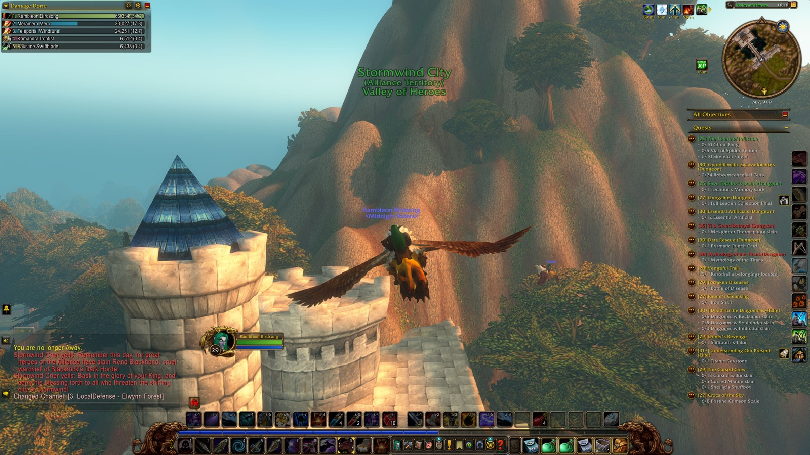
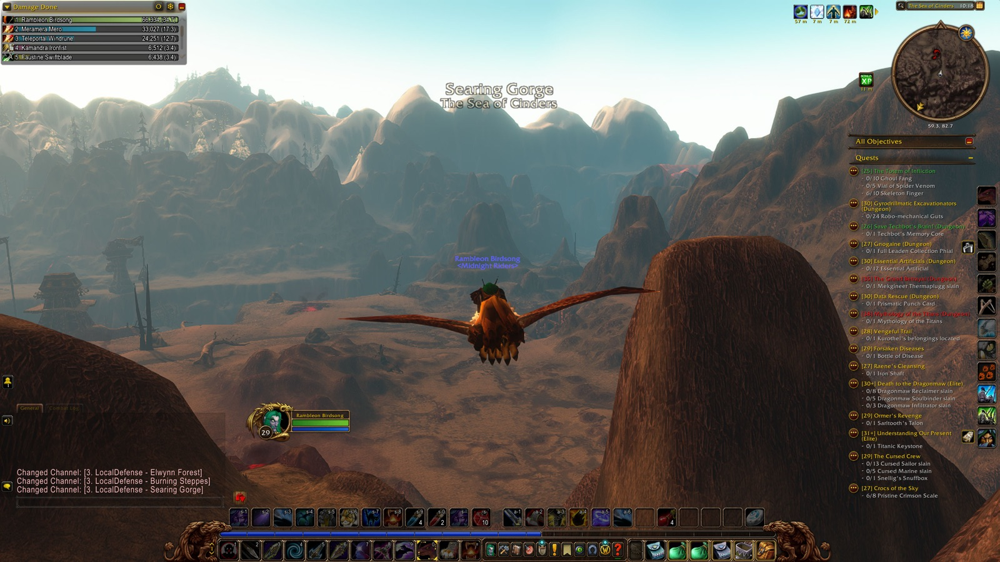
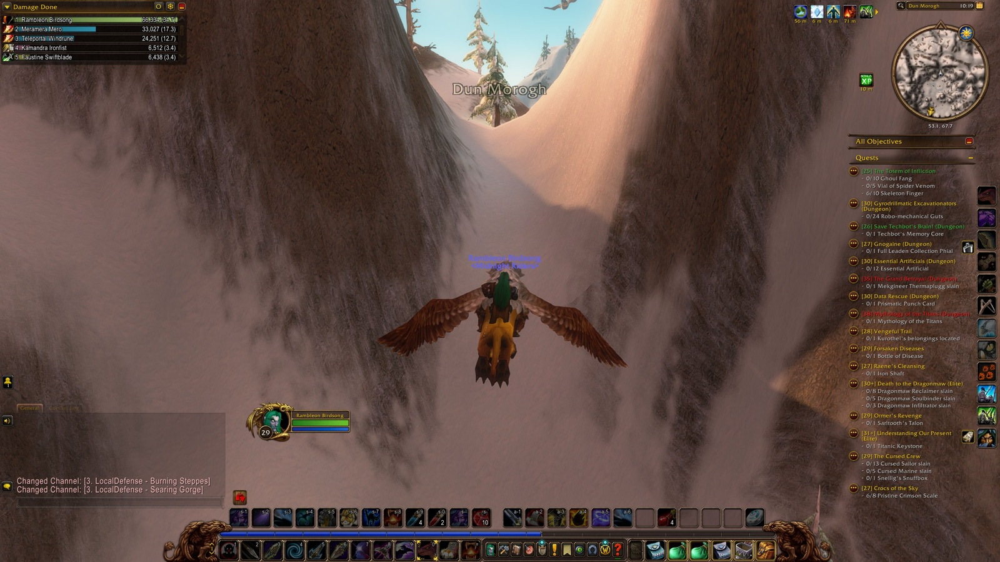
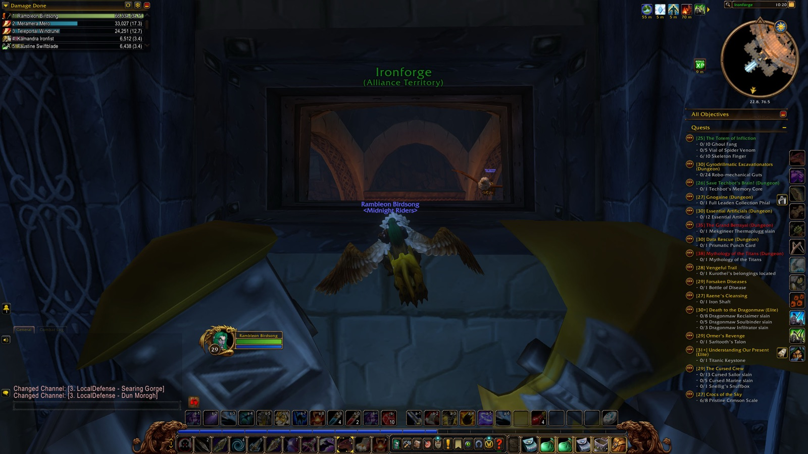

Chapter 9 — Hall of Arms
Rambleon Birdsong · November 15, 2026 · 2h 04m in Azeroth
 10:02 AM — Entered Redridge Mountains
10:02 AM — Entered Redridge Mountains
2h 04m in Azeroth tonight.
0 levels.
6 quests.
39 places.
66 enemies slain.
0 deaths.
6 travelling companions.
Ramble on.
6Quests
39Places
66Enemies slain
3Loot
0Deaths
6People
20,111XP
11Lines of roleplay
Quests
| Quest | Turned in at | Lv |
|---|
| Duskwood |
|---|
| Worgen in the Woods ×4 | Darkshire | 29 |
| The Night Watch | Darkshire | 29 |
| Redridge Mountains |
|---|
| Messenger to Darkshire | Lakeshire | 29 |
| Quest | Picked up at |
|---|
| An Old History Book | Duskwood |
| The Night Watch | Darkshire |
| Look to the Stars | Darkshire |
| Quest | Picked up at | Since |
|---|
| The Tower of Althalaxx | Maestra's Post | Chapter 1 |
| ... and that note you found | Alexston Farmstead | Chapter 2 |
| WANTED: Gath'Ilzogg | Lakeshire | Chapter 2 |
| WANTED: Incinerator Gar'im | Lakeshire | Chapter 2 |
| Gyrodrillmatic Excavationators | Dwarven District | Chapter 3 |
| Claiming Arathi Basin | Stormwind Keep | Chapter 3 |
| Save Techbot's Brain! | Tinker Town | Chapter 3 |
| Find Bingles | Tinker Town | Chapter 3 |
| Culling the Threat | Astranaar | Chapter 5 |
| Blackfathom Villainy | The Pool of Ask'ar | Chapter 5 |
| Alchemical Hazards | Menethil Harbor | Chapter 5 |
| The Shamed Lieutenant | Cathedral of Light | Chapter 7 |
| Fall of Dun Modr | Menethil Harbor | Chapter 7 |
| Blisters on the Land | The Green Belt | Chapter 7 |
| Crocs of the Sky | Menethil Harbor | Chapter 7 |
| The Cursed Crew | Menethil Harbor | Chapter 7 |
| Understanding Our Present | Whelgar's Excavation Site | Chapter 7 |
| Ormer's Revenge | Whelgar's Excavation Site | Chapter 8 |
| Forced Disarmament | Wetlands | Chapter 8 |
| Death to the Dragonmaw | Wetlands | Chapter 8 |
| Raene's Cleansing | Moonwell | Chapter 8 |
| Forsaken Diseases | Forest Song | Chapter 8 |
| Vengeful Trail | Forest Song | Chapter 8 |
| Mythology of the Titans | The Library | Chapter 8 |
| Data Rescue | Tinker Town | Chapter 8 |
| The Grand Betrayal | Tinker Town | Chapter 8 |
| Essential Artificials | Tinker Town | Chapter 8 |
| Gnogaine | Kharanos | Chapter 8 |
| The Hermit | Darkshire | Chapter 8 |
| The Totem of Infliction | Darkshire | Chapter 8 |
| The Legend of Stalvan | Darkshire Town Hall | Chapter 8 |
As far as Rambleon knows: a quest picked up before it was installed, or abandoned before it recorded that, is not here.
Scenes
9:13 AMA scene in Roland's Doom, alone
Rambleon Birdsong “help”
9:45 AMA scene in Duskwood with Roxius Lightwell
Rambleon Birdsong “where da fiend at”
Roxius Lightwell “raven hill”
9:59 AMOverheard in Scarlet Raven Tavern: Celcias Stormbringer, Larry Lockjaw and Andycapp Hotfries
Celcias Stormbringer yells “Stitches incoming”
Larry Lockjaw lies down before Shiftn Forever.
Andycapp Hotfries yells “HELLS BELLS”
The Journey
172 moments, in order · fold
- 8:47 AM — Began the adventure
- 8:47 AM — Entered Scarlet Raven Tavern (Duskwood)
- 8:47 AM — Entered Darkshire (Duskwood)
- 8:48 AM — Entered Duskwood
- 8:48 AM — Entered Brightwood Grove (Duskwood)
- 8:48 AM — Discovered Brightwood Grove
- 8:48 AM — Discovered Brightwood Grove
- 8:49 AM — First Nightbane Shadow Weaver slain
- 8:50 AM — First Nightbane Dark Runner slain
- 8:51 AM — First Nightbane Worgen slain
- 8:53 AM — 6/6 Nightbane Shadow Weaver slain — "Worgen in the Woods"
- 8:54 AM — Entered Duskwood
- 8:54 AM — Entered Darkshire (Duskwood)
- 8:54 AM — Completed "Worgen in the Woods"
- 8:54 AM — Accepted "Worgen in the Woods"
- 8:55 AM — Entered Brightwood Grove (Duskwood)
- 9:01 AM — Joined forces with Valerian (Paladin)
- 9:03 AM — 12/12 Nightbane Dark Runner slain — "Worgen in the Woods"
- 9:04 AM — Entered Darkshire (Duskwood)
- 9:04 AM — Completed "Worgen in the Woods"
- 9:04 AM — Accepted "Worgen in the Woods"
- 9:05 AM — Parted ways with Valerian
- 9:05 AM — Entered Scarlet Raven Tavern (Duskwood)
- 9:07 AM — Entered Darkshire (Duskwood)
- 9:07 AM — Entered Duskwood
- 9:08 AM — Joined forces with Meramera (Mage)
- 9:08 AM — Joined forces with Teleportal (Mage)
- 9:08 AM — First Nightbane Vile Fang slain
- 9:09 AM — First Nightbane Tainted One slain
- 9:10 AM — Entered Roland's Doom (Duskwood)
- 9:10 AM — Discovered Roland's Doom
- 9:10 AM — First Gutspill slain
- 9:10 AM — Entered Duskwood
- 9:11 AM — Accepted "An Old History Book"
- 9:11 AM — Return the book: The History of Stormwind, to the Stormwind Library. — "An Old History Book"
- 9:11 AM — Joined forces with Faustine (Rogue)
- 9:11 AM — 8/8 Nightbane Vile Fang slain — "Worgen in the Woods"
- 9:11 AM — Entered Roland's Doom (Duskwood)
- 9:12 AM — Entered Duskwood
- 9:12 AM — Entered Roland's Doom (Duskwood)
- 9:13 AM — A scene in Roland's Doom, alone (1 line)
- 9:14 AM — Entered Duskwood
- 9:14 AM — Entered Roland's Doom (Duskwood)
- 9:14 AM — Entered Duskwood
- 9:15 AM — Entered Roland's Doom (Duskwood)
- 9:15 AM — Entered Duskwood
- 9:16 AM — Entered Roland's Doom (Duskwood)
- 9:17 AM — Parted ways with Faustine
- 9:17 AM — Entered Duskwood
- 9:17 AM — Joined forces with Kamandra (Paladin)
- 9:18 AM — Entered Roland's Doom (Duskwood)
- 9:19 AM — Entered Duskwood
- 9:20 AM — Discovered The Rotting Orchard
- 9:20 AM — Discovered The Rotting Orchard
- 9:20 AM — Entered The Rotting Orchard (Duskwood)
- 9:21 AM — Entered Duskwood
- 9:22 AM — Entered The Yorgen Farmstead (Duskwood)
- 9:22 AM — Discovered The Yorgen Farmstead
- 9:22 AM — Discovered The Yorgen Farmstead
- 9:22 AM — Entered The Rotting Orchard (Duskwood)
- 9:22 AM — First Defias Night Runner slain
- 9:22 AM — Entered The Yorgen Farmstead (Duskwood)
- 9:22 AM — Entered The Rotting Orchard (Duskwood)
- 9:22 AM — Entered The Yorgen Farmstead (Duskwood)
- 9:23 AM — Entered Duskwood
- 9:23 AM — Entered The Yorgen Farmstead (Duskwood)
- 9:23 AM — 8/8 Nightbane Tainted One slain — "Worgen in the Woods"
- 9:24 AM — Entered Duskwood
- 9:24 AM — Parted ways with Meramera
- 9:24 AM — Parted ways with Teleportal
- 9:25 AM — Parted ways with Kamandra
- 9:25 AM — Entered Darkshire (Duskwood)
- 9:26 AM — Completed "Worgen in the Woods"
- 9:26 AM — Accepted "Worgen in the Woods"
- 9:26 AM — Bring Calor's note to Jonathan Carevin. — "Worgen in the Woods"
- 9:27 AM — Completed "Worgen in the Woods"
- 9:27 AM — Looted Consecrated Wand (Uncommon)
- 9:27 AM — Looted Cloak of the Faith (Uncommon)
- 9:32 AM — Discovered Tranquil Gardens Cemetery
- 9:32 AM — Discovered Tranquil Gardens Cemetery
- 9:32 AM — Entered Tranquil Gardens Cemetery (Duskwood)
- 9:34 AM — Looted Gleaming Claymore of Holy Wrath (Uncommon)
- 9:34 AM — First Skeletal Mage slain
- 9:35 AM — 6/6 Skeletal Mage slain — "The Night Watch"
- 9:37 AM — 8/8 Skeletal Warrior slain — "The Night Watch"
- 9:37 AM — Entered Duskwood
- 9:37 AM — Entered Darkshire (Duskwood)
- 9:37 AM — Entered Duskwood
- 9:38 AM — Entered Darkshire (Duskwood)
- 9:38 AM — Entered Darkshire Town Hall (Duskwood)
- 9:39 AM — Entered Darkshire (Duskwood)
- 9:39 AM — Completed "The Night Watch"
- 9:40 AM — Accepted "The Night Watch"
- 9:40 AM — Accepted "Look to the Stars"
- 9:41 AM — Entered Duskwood
- 9:41 AM — Joined forces with Friar (Priest)
- 9:41 AM — First Skeletal Horror slain
- 9:42 AM — Parted ways with Friar
- 9:45 AM — A scene in Duskwood with Roxius Lightwell (2 lines)
- 9:47 AM — 15/15 Skeletal Horror slain — "The Night Watch"
- 9:47 AM — Entered Darkshire (Duskwood)
- 9:48 AM — Entered Scarlet Raven Tavern (Duskwood)
- 9:59 AM — Overheard in Scarlet Raven Tavern: Celcias Stormbringer, Larry Lockjaw and Andycapp Hotfries (3 lines)
- 10:01 AM — Entered Darkshire (Duskwood)
- 10:01 AM — Found the flight path at Darkshire
- 10:02 AM — Flew from Darkshire to Lakeshire, Redridge
- 10:02 AM — Entered Duskwood
- 10:02 AM — Entered The Darkened Bank (Duskwood)
- 10:02 AM — Entered Duskwood
- 10:02 AM — Entered Three Corners (Redridge Mountains)
- 10:02 AM — Entered Redridge Mountains
- 10:03 AM — Entered Lake Everstill (Redridge Mountains)
- 10:06 AM — Entered Lakeshire (Redridge Mountains)
- 10:06 AM — Completed "Messenger to Darkshire"
- 10:06 AM — Entered Lake Everstill (Redridge Mountains)
- 10:07 AM — Entered Redridge Mountains
- 10:14 AM — Flew from Redridge Mountains to Ironforge, Dun Morogh
- 10:15 AM — Entered Three Corners (Redridge Mountains)
- 10:15 AM — Entered Elwynn Forest
 10:15 AM — Entered Elwynn Forest
10:15 AM — Entered Elwynn Forest- 10:15 AM — Entered Ridgepoint Tower (Elwynn Forest)
- 10:15 AM — Entered Elwynn Forest
- 10:15 AM — Entered Eastvale Logging Camp (Elwynn Forest)
- 10:15 AM — Entered Elwynn Forest
- 10:15 AM — Entered Tower of Azora (Elwynn Forest)
- 10:16 AM — Entered Crystal Lake (Elwynn Forest)
- 10:16 AM — Entered Goldshire (Elwynn Forest)
- 10:16 AM — Entered Elwynn Forest
- 10:16 AM — Entered Valley of Heroes (Stormwind City)

10:16 AM — Entered Stormwind City- 10:16 AM — Entered Elwynn Forest
- 10:17 AM — Entered Crystal Lake (Elwynn Forest)
- 10:17 AM — Entered Northshire Vineyards (Elwynn Forest)
- 10:17 AM — Entered Northshire Valley (Elwynn Forest)
- 10:17 AM — Entered Elwynn Forest
- 10:17 AM — Entered Burning Steppes
 10:17 AM — Entered Burning Steppes
10:17 AM — Entered Burning Steppes- 10:17 AM — Entered Draco'dar (Burning Steppes)
- 10:18 AM — Entered Blackrock Mountain (Burning Steppes)
- 10:18 AM — Entered Burning Steppes
- 10:18 AM — Entered Blackrock Stronghold (Burning Steppes)
- 10:18 AM — Entered Burning Steppes
- 10:18 AM — Entered The Sea of Cinders (Searing Gorge)

10:18 AM — Entered Searing Gorge- 10:19 AM — Entered The Cauldron (Searing Gorge)
- 10:19 AM — Entered Searing Gorge
- 10:19 AM — Entered Firewatch Ridge (Searing Gorge)
- 10:19 AM — Entered Searing Gorge
- 10:19 AM — Entered Dun Morogh

10:19 AM — Entered Dun Morogh- 10:19 AM — Entered The Tundrid Hills (Dun Morogh)
- 10:19 AM — Entered Dun Morogh
- 10:20 AM — Entered Kharanos (Dun Morogh)
- 10:20 AM — Entered Dun Morogh
- 10:20 AM — Entered Gates of Ironforge (Dun Morogh)
- 10:20 AM — Entered Ironforge

10:20 AM — Entered Ironforge- 10:20 AM — Entered The Great Forge (Ironforge)
- 10:22 AM — Entered The Military Ward (Ironforge)
- 10:22 AM — Entered Hall of Arms (Ironforge)
- 10:23 AM — Learned |cff71d5ff|Hspell:14302:0|h[Immolation Trap (Rank 2)]|h|r
- 10:23 AM — Learned Immolation Trap
- 10:23 AM — Learned Rapid Fire
- 10:23 AM — Learned Serpent Sting
- 10:23 AM — Learned Track Elementals
- 10:23 AM — Learned Aimed Shot
- 10:23 AM — Learned Arcane Shot
- 10:23 AM — Learned Aspect of the Hawk
- 10:23 AM — Learned Frost Trap
- 10:23 AM — Learned |cff71d5ff|Hspell:3661:0|h[Mend Pet (Rank 3)]|h|r
- 10:23 AM — Learned Mend Pet